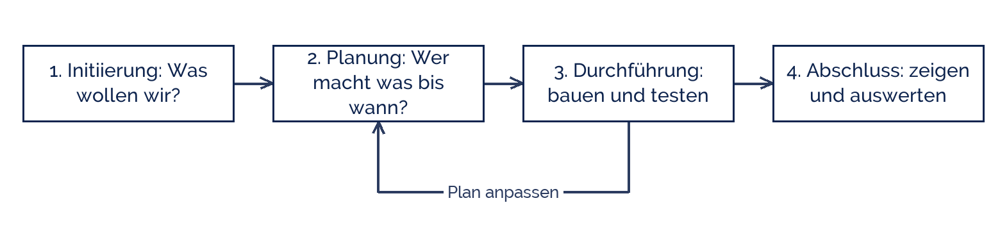

Wolfgang_Hasselmann
Wolfgang_Hasselmann
Good morning!
Nur das Schöne wird die Welt retten!
Fjodor Dostojewski
Nicht verzagen, Doc Alvers fragen!
Informatik — Klasse 9
Was ist eigentlich ein Projekt?
Vier Merkmale, vier Phasen — und warum das Reihenfolge hat
Nicht verzagen, Doc Alvers fragen!
Kapitel 01
Vier Merkmale
Nicht jede Arbeit ist ein Projekt
Nicht verzagen, Doc Alvers fragen!
Woran man ein Projekt erkennt
| Merkmal | heißt | kein Projekt wäre |
|---|---|---|
| Ziel | es gibt ein klares Ergebnis | „irgendwas mit Computern“ |
| Zeitrahmen | Anfang und Ende stehen fest | eine Daueraufgabe |
| Team | mehrere arbeiten zusammen | eine Einzelaufgabe |
| einmalig | so wurde es noch nicht gemacht | die tägliche Routine |
Fehlt eines der vier, wird es meistens kein Projekt — sondern Arbeit ohne Ende
Unser Projekt hat alle vier: ein Produkt, zwölf Stunden, ein Team, etwas Neues
Nicht verzagen, Doc Alvers fragen!
Beispiele aus eurem Leben
Schulfest organisieren: Ziel, Termin, Team, jedes Jahr ein bisschen anders
Spieleabend planen: klein, aber alle vier Merkmale sind da
Zimmer aufräumen: kein Team, kein Ergebnis, das bleibt — kein Projekt
Ein Haus bauen: das klassische Projekt, mit Plan, Fristen und Gewerken
Hausaufgaben machen: Routine, kein Projekt — auch wenn es sich so anfühlt
Nicht verzagen, Doc Alvers fragen!
Kapitel 02
Die vier Phasen
In dieser Reihenfolge, mit Rücksprung
Nicht verzagen, Doc Alvers fragen!
Von der Idee bis zur Auswertung
Der Rücksprung von 3 nach 2 ist normal: Pläne ändern sich, wenn man anfängt
Wer die Planung überspringt, merkt in Phase 3, dass niemand weiß, was zu tun ist

Nicht verzagen, Doc Alvers fragen!
Was in jeder Phase entsteht
| Phase | Ergebnis am Ende |
|---|---|
| Initiierung | Thema und Ziel in einem Satz |
| Planung | Aufgabenliste mit Namen und Terminen |
| Durchführung | das Produkt und die Zwischenstände |
| Abschluss | Präsentation, Dokumentation, Auswertung |
Jede Phase hat ein greifbares Ergebnis — sonst weiß niemand, ob sie fertig ist
Nicht verzagen, Doc Alvers fragen!
Kapitel 03
Unser Projekt
Zwölf Stunden, ein Produkt
Nicht verzagen, Doc Alvers fragen!
Der Fahrplan bis Mai
Jetzt: Phasen verstehen, Teams bilden, Themen sammeln
Februar: Thema festlegen, Anforderungen aufschreiben, Lösung entwerfen
März und April: bauen, testen, Fehler suchen, dokumentieren
Mai: präsentieren und auswerten
Bewertet werden am Ende Produkt, Dokumentation und Vortrag
Nicht verzagen, Doc Alvers fragen!
Ein Projekt hat ein Ziel, ein Ende, ein Team und etwas Neues. Und es beginnt nicht mit dem Bauen, sondern mit dem Ziel.
Merksatz
Nicht verzagen, Doc Alvers fragen!
Fun Facts: Projekte
Das Wort Projekt kommt vom lateinischen „proiectum“ — das Vorausgeworfene
Große IT-Projekte scheitern erstaunlich oft — meist nicht an der Technik, sondern an der Absprache
Der Flughafen BER war neun Jahre später fertig als geplant
Die Faustregel vieler Profis: die letzten 10 % kosten die Hälfte der Zeit
Deshalb planen Profis Puffer ein — wir auch: zwei Stunden im Mai
Nicht verzagen, Doc Alvers fragen!
Eure Aufgabe
Findet zu dritt drei Beispiele für Projekte aus eurem Alltag
Prüft bei jedem die vier Merkmale — passt wirklich alles?
Sammelt fünf Ideen, was euer Informatikprojekt werden könnte
Zu jeder Idee ein Satz: Was soll am Ende dastehen?
Nächste Woche bilden wir die Teams — überlegt euch, mit wem
Nicht verzagen, Doc Alvers fragen!